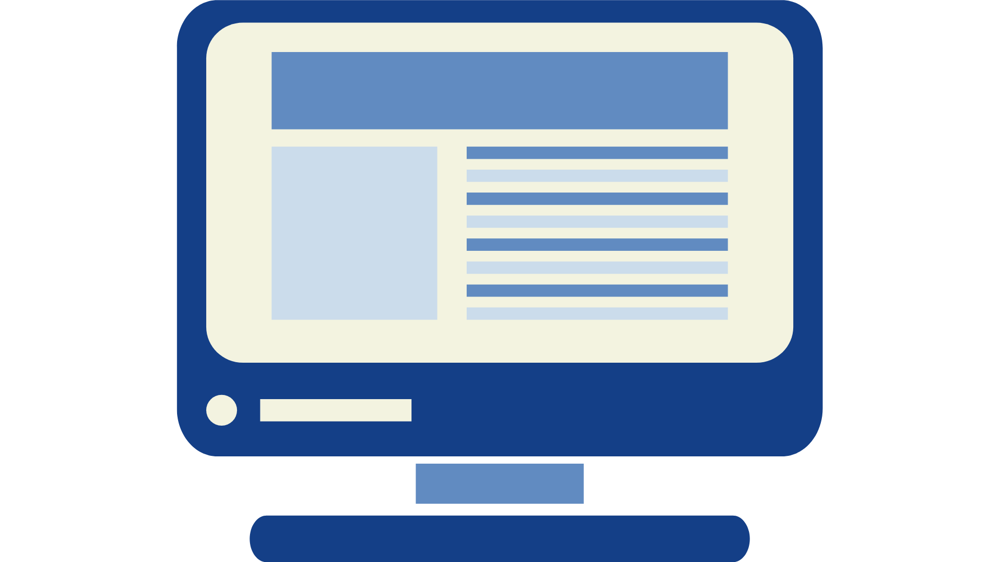
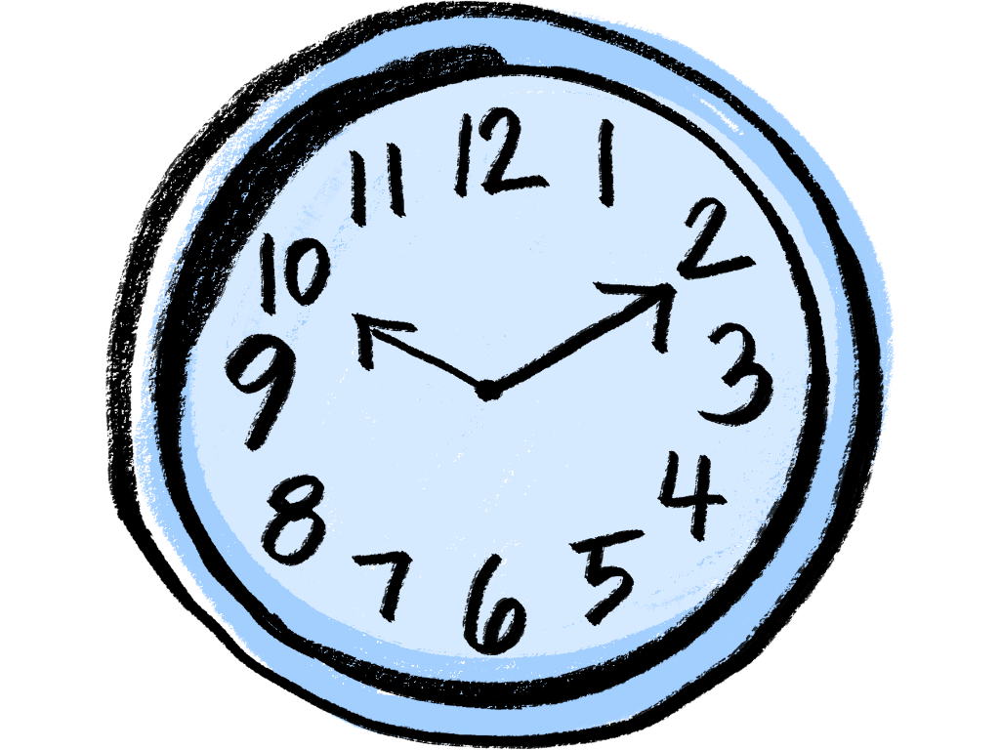
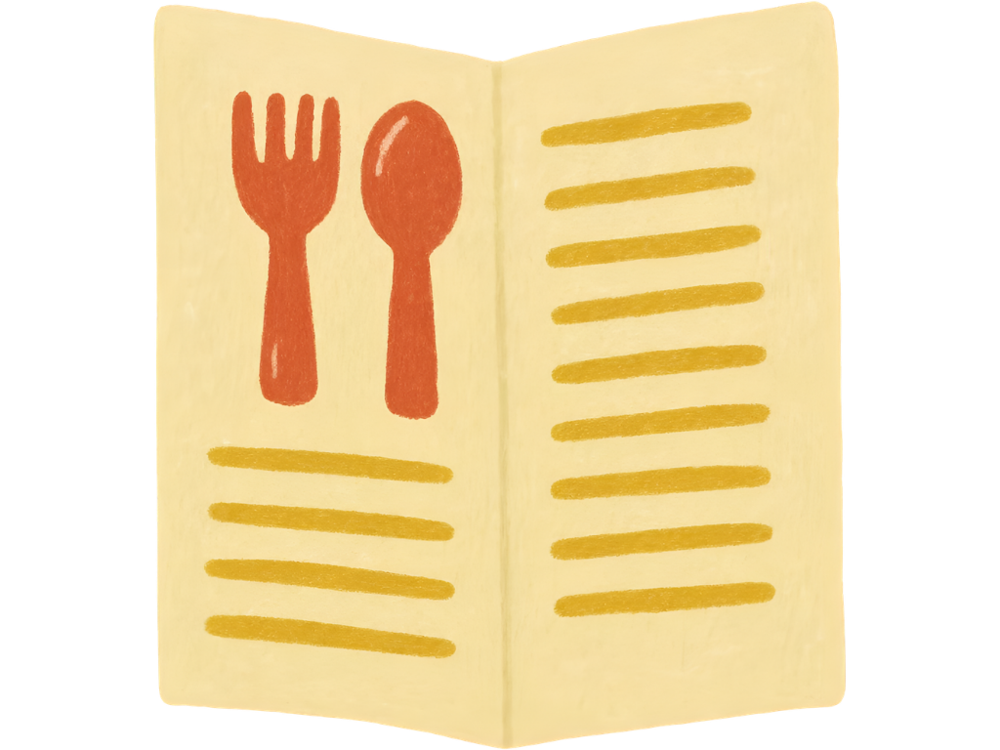

Pasos a seguir:
Registrate o Inicia Sesión en nuestra página.
Explora el menú y elige tus productos favoritos.
Realiza tu pedido con anticipación y completa tu compra de manera sencilla.
Un lugar donde los buenos sabores se encuentran con grandes momentos, porque la vida universitaria también se disfruta fuera del aula
CampusBreak es tu nueva forma de disfrutar la cafetería universitaria. Olvídate de las largas filas y aprovecha mejor tus momentos de descanso. Desde nuestra plataforma podrás explorar el menú, elegir tus productos favoritos, realizar tu pedido con anticipación y consultar su estado en tiempo real. Realiza tu pedido desde cualquier lugar, completa tu compra de manera sencilla y recibe una notificación cuando esté listo para retirarlo. Todo en un solo lugar, de forma rápida, cómoda y organizada.

Registrate o Inicia Sesión en nuestra página.
Explora el menú y elige tus productos favoritos.
Realiza tu pedido con anticipación y completa tu compra de manera sencilla.

Realiza tus pedidos con anticipación y evita las largas filas durante los recesos universitarios.

Explora el menú, selecciona tus productos favoritos y realiza tu pedido desde cualquier lugar.
Consulta el estado de tu pedido y recibe una notificación cuando esté listo para retirar.